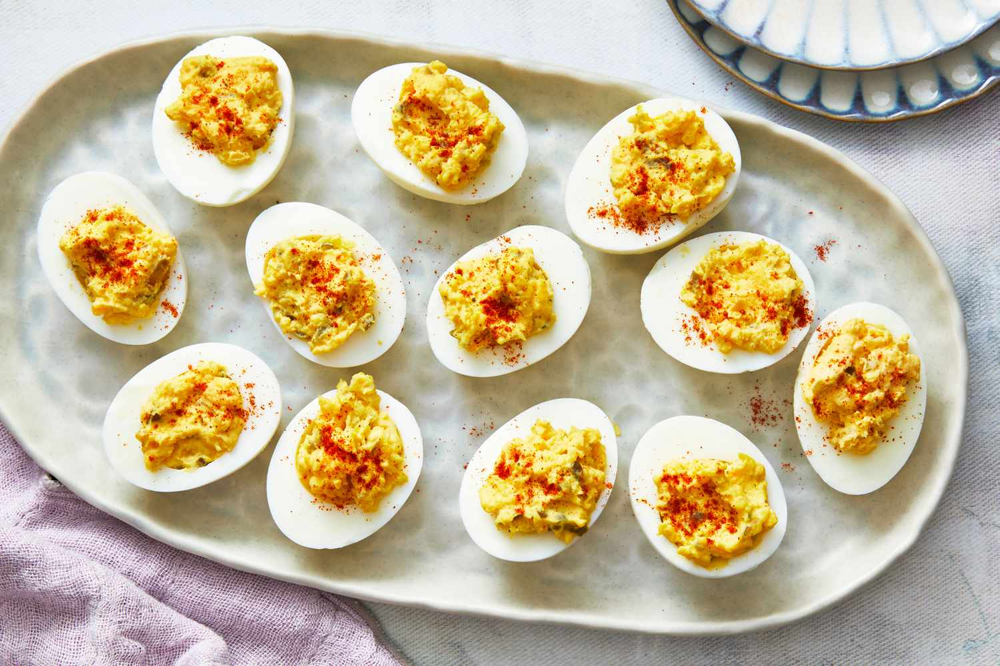

Deviled Eggs

Description
Deviled eggs are a go to for any holiday dinner. We recommend doubling this recipe for family dinners!
Ingredients
- 6 hard-cooked eggs
- 2 tablespoons mayonnaise
- 1 teaspoon white sugar, or to taste
- 1 teaspoon white vinegar
- 1 teaspoon prepared mustard
- 1 tablespoon finely chopped onion
- 1 tablespoon finely chopped celery
- ½ teaspoon salt, or to taste
- 1 pinch paprika, or to taste
Steps
- Gather all ingredients. Peel hard-cooked eggs.
- Slice eggs in half lengthwise and remove yolks; set whites aside.
- Mash yolks with a fork in a small bowl. Stir in mayonnaise, sugar, vinegar, mustard, onion, and celery; mix well and season with salt to taste.
- Stuff or pipe egg yolk mixture into egg whites.
- Sprinkle with paprika. Refrigerate until serving.